a = 2; b = 3; c = -2
discr = b^2 - 4*a*c
(-b + sqrt(discr))/(2a), (-b - sqrt(discr))/(2a)(0.5, -2.0)
A notebook for this material: ipynb (Pluto html) (With commentary)
A zero of the function \(f\) is a value \(x\) with \(f(x) = 0\).
Solving for zero of a function is a mathematical skill taught early on. In some cases, such as with linear equations, solving for zeros can be done directly using algebra. Similarly, in the case of factorable polynomials, we are taught to factor and then set each term to 0 to find the possible solutions, utilizing the fact that for the real numbers the product of two numbers is \(0\) only if one or both of the numbers is as well.
However, in general, the problem of finding one (or all) solutions to the equation
\[ f(x) = 0. \]
for an arbitrary \(f\) has no well-defined process.
A related problem is to find one (or all) solutions to an equation of this type:
\[ f(x) = g(x) \]
Conceptually this is identical to the above, as we just set \(h(x) = f(x) - g(x)\) and solve for when \(h(x)\) is \(0\).
Here we discuss a few different elementary means to do find zeros with Julia, leaving some others for a later time.
We will use the add-on package Roots which provides implementations of a few zero- and root-finding algorithms.
using MTH229
using PlotsUnivariate polynomials are algebraic expessions involving an indeterminate. Polynomial functions are functions whose body evaluates a polynomial expression. These are special functions, in that their relatively simple form allows for many explicit things to be known. A famous example is the quadratic formula which for polynomials of degree 2 gives an explicit formula for the roots:
\[ \frac{-b \pm \sqrt{b^2 - 4ac}}{2a}. \]
A “root” of a polynomial is just a polynomial-specific name for a zero of the polynomial viewed as a function.
For example, if we have the quadratic polynomial \(2x^2 + 3x - 2\) we can solve for the roots with:
a = 2; b = 3; c = -2
discr = b^2 - 4*a*c
(-b + sqrt(discr))/(2a), (-b - sqrt(discr))/(2a)(0.5, -2.0)If you wanted to write a function to do this, it would be straightforward, save the detail of needing to make a negative number complex in order to take its square root:
## find roots of ax^2 + bx + c
function quadratic(a, b, c)
discr = b^2 - 4*a*c
sq = (discr > 0) ? sqrt(discr) : sqrt(discr + 0im)
[(-b - sq)/(2a), (-b + sq)/(2a)]
endquadratic (generic function with 1 method)This is an example where the function is not type-stable as it returns either real-valued answers or complex-valued answers depending on the values of the input variables. In general, Julia functions avoid this behaviour, as it leads to less performant code.
To find the roots of \(x^2 + x - 1\) we could simply use:
quadratic(1, 1, -1)2-element Vector{Float64}:
-1.618033988749895
0.6180339887498949There are also such formula for third and fourth degree polynomials. However, Galois – at the tender age of 20 – demonstrated that, in general, there can be no such formula for the roots of a fifth or higher degree polynomial. There are still facts known about such polynomials. For example, the Fundamental theorem of algebra states that every real-valued polynomial of degree \(n\) will have \(n\) roots, where we count complex roots and multiplicities.
More generally, the equation \(f(x) = 0\) may not have any special form leading to a known solution. In this case, there are various techniques to find zeros. Here we mention graphing, such as is done with a graphing calculator. In the next section, we discuss the bisection algorithm for root finding.
The flight of an arrow can be modeled using various functions, depending on assumptions. Suppose an arrow is launched in the air from a height of 0 feet above the ground at an angle of \(\theta = \pi/4\). With a suitable choice for the initial velocity, a model without wind resistance for the height of the arrow at a distance \(x\) units away may be:
\[ j(x) = \tan(\theta) x - (1/2) \cdot g(\frac{x}{v_0 \cos\theta})^2. \]
In Julia we have, taking \(v_0=200\):
j(x; theta=pi/4, g=32, v0=200) = tan(theta)*x - (1/2)*g*(x/(v0*cos(theta)))^2j (generic function with 1 method)With a velocity-dependent wind resistance given by \(\gamma\), again with some units, a similar equation can be constructed. It takes a different form:
\[ y(x) = (\frac{g}{\gamma v_0 \cos(\theta)} + \tan(\theta)) \cdot x + \frac{g}{\gamma^2}\log(\frac{v_0\cos(\theta) - \gamma x}{v_0\cos(\theta)}) \]
Again, \(v_0\) is the initial velocity and is taken to be \(200\) and \(\gamma\) a resistance, which we take to be \(1\). With this, we have the following Julia definition (with a slight reworking of \(\gamma\)):
function y(x; theta=pi/4, g=32, v0=200, gamma=1)
a = gamma * v0 * cos(theta)
(g/a + tan(theta)) * x + g/gamma^2 * log((a-gamma^2 * x)/a)
endy (generic function with 1 method)For each model, we wish to find the value of \(x\) after launching where the height is modeled to be 0. That is how far will the arrow travel before touching the ground?
For the model without wind resistance, we can graph the function easily enough. Let’s guess the distance is no more than 500 feet:
plot(j, 0, 500)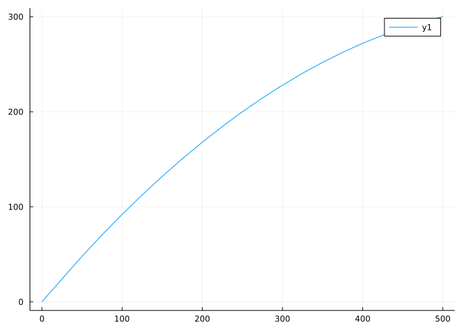
Well, we haven’t even seen the peak yet. Plotting over a wider interval will show that \(1250\) is the largest root. So we plot over this domain to visualize the flight:
plot(j, 0, 1250)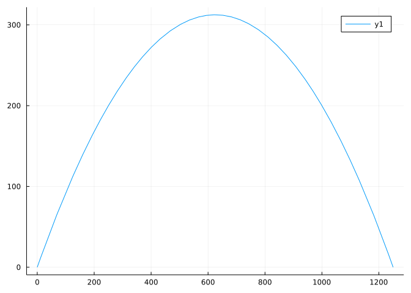
As for the model with wind resistance, a quick plot over the same interval, \([0, 1250]\) yields:
plot(y, 0, 1250)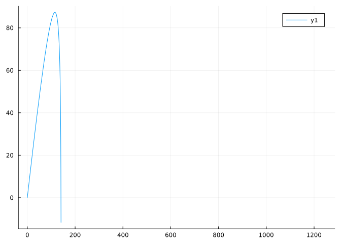
Oh, “Domain Error.” Of course, when the argument to the logarithm is negative we will have issues.
We solve for when \(a-\gamma^2 x\) is \(0\):
gamma = 1
a = 200 * cos(pi/4)
b = a/gamma^2141.4213562373095We try on the reduced interval avoiding the obvious asymptote at b by subtracting \(1\):
plot(y, 0, b - 1)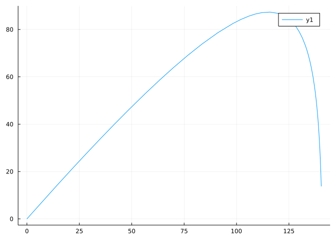
Now we can see the zero is around 140. We re-plot:
plot(y, 135, 141)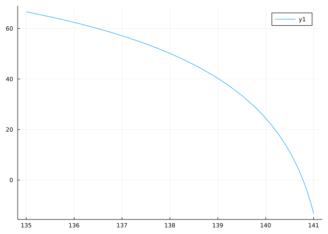
plot(y, 140, 141)
plot!(zero)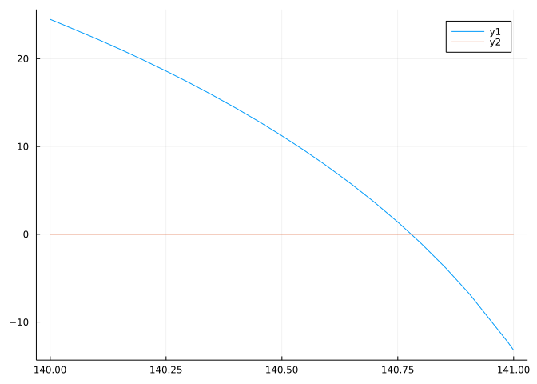
The answer is approximately \(140.7\)
Finally, we plot both graphs at once to see that it was a very windy day indeed.
b = 140.7
plot(j , 0, 1250)
plot!(y, 0, b)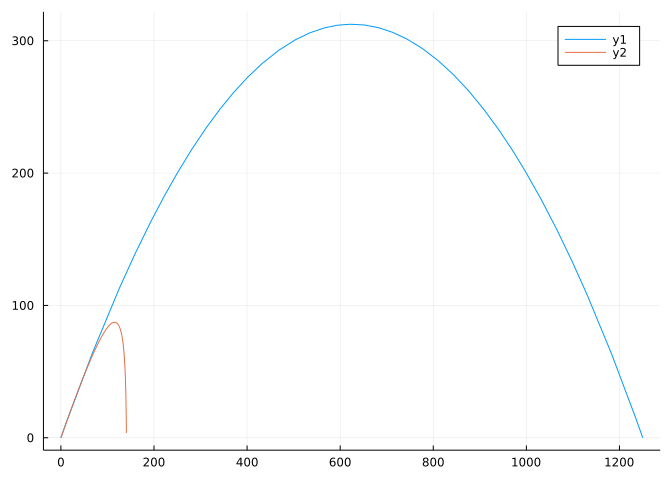
Sometimes, the equation \(f(x)=0\) is actually presented as \(h(x)= g(x)\). This form can be rewritten as \(f(x) = h(x) - g(x) = 0\), or if working graphically we can just look for crossing points of the graphs of \(g(x)\) and \(h(x)\). Here we shall do that.
We wish to compare two trash collection plans
There are some cases where plan 1 is cheaper and some where plan 2 is. Categorize them.
Both plans are linear models and may be expressed in slope-intercept form:
plan1(x) = 47.49 + 0.77x
plan2(x) = 30.00 + 2.00xplan2 (generic function with 1 method)Assuming this is a realistic problem and an average American household might produce 10-20 bags of trash a month (yes, that seems too much!) we plot in that range:
plot(plan1, 10, 20)
plot!(plan2)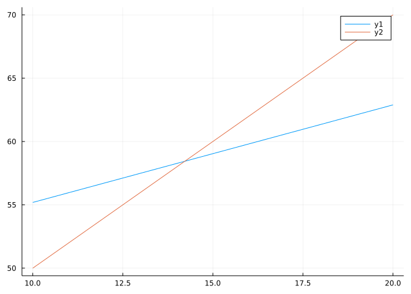
We can see the intersection point is around 14 and that if a family generates between 0-14 bags of trash per month that plan 2 would be cheaper, otherwise they should opt for plan 1.
Graphically estimate the one zero of \(f(x) = e^x - x^3\) over the interval \([0,4]\).
Solving equations of the type \(f(x)=g(x)\) for \(x\) can also be done graphically. One method is to plot both functions and look for crossing points. Use this approach to graphically estimate all solutions to \(\cos(x) = x^2\) over the interval \((-\pi/2, \pi/2)\). What are they?
In an analysis of rainbows, Airy developed a special function implemented as airyai in Julia’s SpecialFunctions package, which is loaded with the MTH229 package. The zeros of this function are all negative. The first one is between \(-3\) and \(-1\). Find it graphically.
The polynomial \(f(x) = x^5 - 6x^3 - 6x^2 -7x - 6\) has three real roots. Which of the following values is not one of them? Try to solve this graphically.
Let \(y(x)\) be defined as above to model the flight of an arrow. If \(\gamma=1/2\) when will the arrow strike the ground after launch?
Let \(y(x)\) be defined as above to model the flight of an arrow. Suppose a hill is in the path of the arrow. The hill is given by this function:
hill(x) = x > 100 ? 2.0*(x-100) : 0.0hill (generic function with 1 method)By solving y(x) = hill(x) solve for how far the arrow will fly before hitting the hill.
The last example had us graphically “zoom” in on a zero, and led us to an estimate to \(1\) or \(2\) decimal points. Trying to get more accuracy than that graphically is at best tedious. Here we discuss a method to get as much accuracy as is numerically possible based on the intermediate value theorem:
The intermediate value theorem: If \(f(x)\) is a continuous function on \([a,b]\) then at some point in the interval \(f(x)\) takes on any value between \(f(a)\) and \(f(b)\).
In particular if \(f(x)\) is continuous with \(f(a)\) and \(f(b)\) having different signs then there must be a point \(c\) in \([a,b]\) where \(f(c) = 0\). (When \(f(a)\) and \(f(b)\) have different signs, we say \(a\) and \(b\) bracket a root.) This observation is due to Bolzano.
The bisection algorithm utilizes Bolzano’s observation. It is a simple iterative procedure for finding such a value \(c\) when we have a continuous function and a bracketing interval.
The bisection method does not work when the function does not cross the \(x\) axis at the root. For example, the zero at \(0\) of \(f(x) = x^2 e^x\) would not be found with this method.
Mathematically the basic idea is simple.
Starting with \([a,b]\), the midpoint \(M = (a + b)/2\), is tested for its function value. If \(f(M) = 0\), great, we are done. If it has opposite sign of \(f(a)\), then a root must be in the interval \([a,M]\), so the problem is reduced a smaller interval. Otherwise, it has opposite sign of \(f(b)\) and the problem is reduced to \([M,b]\). Either way, the algorithm is repeated for the smaller interval where a root is known. As each step halves the interval length, it must eventually converge to an answer.
Graphically, we could do this. For example, Let’s consider \(f(x) = x^2 - 2\) with the bracketing interval \([1,2]\). We first plot:
f(x) = x^2 - 2
a,b = 1, 2
plot(f, a, b)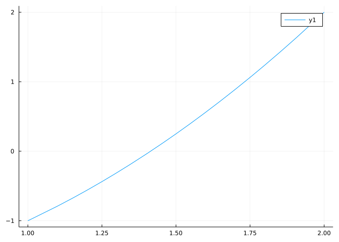
We can see that \(c = (a + b)/2 = 3/2\) will have \(f(c) > 0\), so the new bracket is \([a,c]\):
a, b = a, (a + b)/2
plot(f, a, b)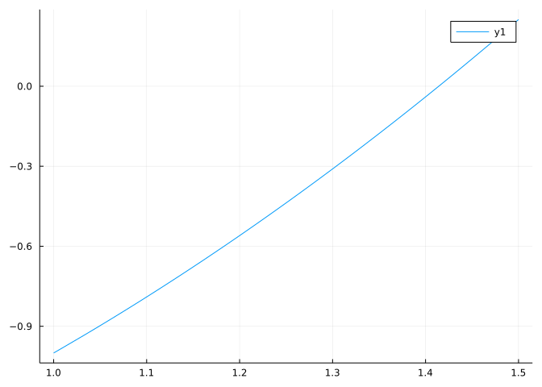
Now the midpoint is negative, so we modify a:
a, b = (a + b)/2, b
plot(f, a, b)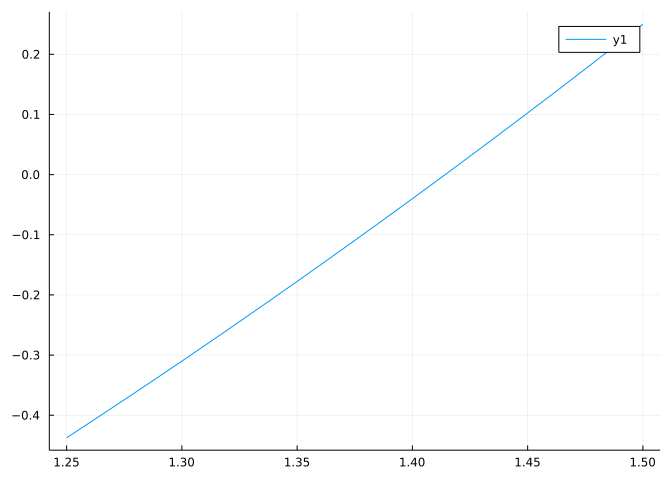
And again, this has a midpoint in the negative territory so again we modify a:
a, b = (a + b)/2, b
plot(f, a, b)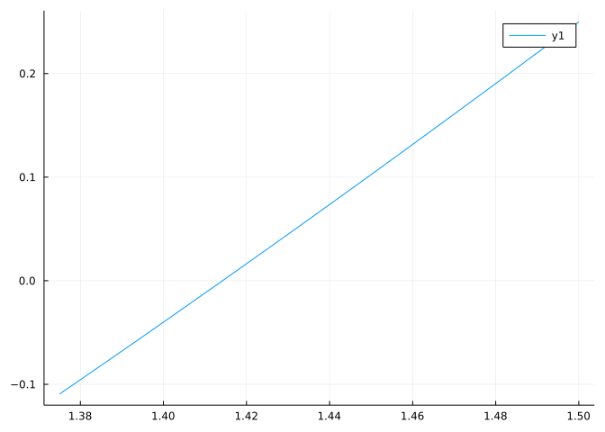
And now, as the midpoint is in positive territory we would modify \(b\) …
This gets tedious to do graphically. But it can be easily programmed. The main step might look something like this:
f(x) = x^2 - 2
a, b = 1, 2
c = (a + b) /2
if f(a) * f(c) < 0
a, b = a, c
else
a, b = c, b
end
a,b(1, 1.5)Though some check if f(c) == 0 is also needed.
Here \(c=1.5\) and the new interval is \([1.0, 1.5]\), as we had graphically. We just need to repeat the above.
It seems as though we could be here all day. Indeed, if doing this by hand it might take up quite a bit of time. We should automate this. Before automating this, we need to think: when would we stop?
Mathematically we can keep taking halves using the concept of a limit. See for example Zeno’s paradox. On a computer we don’t have such a luxury. In fact, for floating point numbers we couldn’t keep taking halves – even if we wanted – as ultimately we should expect tp get a and b being floating point values that are next to each other – and hence there is no midpoint. (Well, there are some cases that suggest a more careful numeric approach to the above.)
So even though this doesn’t make mathematical sense we can try stopping when the following condition is no longer true:
a < c < bfalseA while loop is used to repeat the central step until the above (or some variant) is false.
The MTH229 package has a bisection method implemented for this which also outputs a graphical indication of the first few steps taken.
Okay, let’s look at the function \(f(x) = -16x^2 + 32x\). We know that 0 and \(2\) are roots. Let’s see if our algorithm finds them:
f(x) = -16x^2 + 32x
bisection(f, -1, 1) ## should find 0
a###############################################################b
... exact answer found ...0.0bisection(f, 1, 3) ## should find 2
a###############################################################b
... exact answer found ...2.0Okay, it seems to work. Lets try it on a less trivial problem. We know \(\sin(x)\) and \(\cos(x)\) cross in the interval \([0, \pi/2]\). If we are too tired to remember where, we can simply ask:
f(x) = cos(x) - sin(x)
x = bisection(f, 0, pi/2)
a###############################################################b
................................a###############################b
................................a###############b................
................................a#######b........................
................................a###b............................
................................a#b..............................
................................ab...............................
⋮⋮
0.7853981633974483Is x really a zero?
x, f(x)(0.7853981633974483, 1.1102230246251565e-16)Hmm, the answer is 1.1102230246251565e-16. So technically this is not a zero. But computationally it is a zero! First it should be clear that it is really close to zero. We will see it is as close as computationally possible to a zero.
The nextfloat and prevfloat functions find the floating point values just bigger than x and just smaller. In this case we have that f(x) and f(nextfloat(x)) have different signs:
f(x), f(nextfloat(x))(1.1102230246251565e-16, -1.1102230246251565e-16)So \(f\) is crossing \(0\) between the value we found, x and, the floating point value just a bit bigger. We can’t realistically expect to get any closer than that, as there are no machine numbers in between these two.
The bisection method, while easy to describe and understand, can be made a bit more efficient. The find_zero function from the Roots package does so. This package is loaded when MTH229 is. This function uses a tuple to specify the bracketing interval. but does not need to typed in.
For example, to find a root of \(f(x) = 2x \cdot \exp(-20) - 2 \cdot \exp(-20x) + 1\) in the interval \([0,1]\) we have:
using Roots
f(x) = 2x * exp(-20) - 2 * exp(-20x) + 1
find_zero(f, (0, 1))0.03465735902085385The find_zero function is actually an interface to various root-finding algorithms. When called as above – with two intial starting points – it uses a bracketing approach as discussed here, though with a different notion of the midpoint.
A slightly different interface is given by the fzero function, where that above would be:
fzero(f, 0, 1)0.03465735902085385One needs to know where to look in order to use the bisection method. The basic “one-two punch” is:
Here we illustrate with the problem of finding all intersection points of \(e^x = x^4\) over the interval \([0,10]\).
Recall, solving for \(g(x) = h(x)\) is identical to the problem of solving \(f(x) = 0\), where we define \(f(x) = g(x) - h(x)\). So our problem is to find solutions to \(e^x - x^4 = 0\).
A quick plot shows that the function has such a wide range that looking over the entire domain at once will be problematic:
f(x) = exp(x) - x^4
plot(f, 0, 10)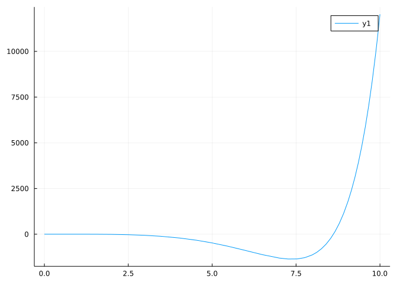
Instead, we look between \([0,3]\) and \([8,9]\). A quick confirmation shows these are good choices to use. For example, between \(8\) and \(9\) we have:
plot(f, 8, 9)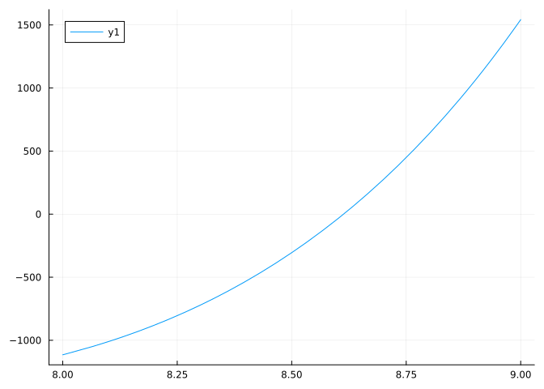
So we find the values of the zero in the bracketed region \([8,9]\):
find_zero(f, (8, 9))8.6131694564414The root within \([0, 3]\) is found with:
find_zero(f, (0, 3))1.4296118247255556In the bisection method algorithm we checked that the value of \(f\) at \(a\) and \(b\) had opposite signs by looking at \(f(a)\cdot f(b)\). Why did this work?
There is another root in the interval \([-10, 0]\) for the function \(f(x) = e^x - x^4\). Find its value numerically:
Let \(f(x) = x^2 - 10 \cdot x \cdot \log(x)\). This function has two zeros on the positive \(x\) axis. You are asked to find the largest (graph and bracket…):
The airyai function has infinitely many negative roots, as the function oscillates when \(x < 0\). In a previous problem we graphically found the largest root. Now find the second largest root using the graph to bracket the answer, and then solving.

In 1638, according to Amir D. Aczel, an experiment was performed in the French Countryside. A monk, Marin Mersenne, launched a cannonball straight up into the air in an attempt to help Descartes prove facts about the rotation of the earth. Though the experiment was not successful, Mersenne later observed that the time for the cannonball to go up was greater than the time to come down. According to “Vertical Projection in a Resisting Medium: Reflections on Observations of Mersenne”.
This isn’t the case for simple ballistic motion where the time to go up is equal to the time to come down. We can “prove” this numerically. For simple ballistic motion, \(f(t) = -(1/2)\cdot 32 t^2 + v_0t\). The time to go up and down are found by the two zeros of this function. The peak time is related to a zero of a function given by D(f), which for now we’ll take as a mystery function, but later will be known as the derivative.
Let \(v_0= 390\). The three times in question can be found from the zeros of f and f'. What are they?
For simple ballistic motion you find that the time to go up is the time to come down. For motion within a resistant medium, such as air, this isn’t the case. Suppose a model for the height as a function of time is given by
\[ h(t) = (\frac{g}{\gamma^2} + \frac{v_0}{\gamma})(1 - e^{-\gamma t}) - \frac{gt}{\gamma} \]
(From “On the trajectories of projectiles depicted in early ballistic Woodcuts”)
Here \(g=32\), again we take \(v_0=390\), and \(\gamma\) is a drag coefficient that we will take to be \(1\). This is valid when \(h(t) \geq 0\). In Julia, rather than hard-code the parameter values, for added flexibility we can pass them in as keyword arguments:
h(t; g=32, v0=390, gamma=1) = (g/gamma^2 + v0/gamma)*(1 - exp(-gamma*t)) - g*t/gammah (generic function with 1 method)Now find the three times: \(t_0\), the starting time; \(t_a\), the time at the apex of the flight; and \(t_f\), the time the object returns to the ground.
find_zeros functionSo, find_zero finds one value within a bracket. But this suggests a means to find all (most?) of the zeros within an interval – split the interval up into many pieces; identify those that bracket a zero; use find_zero on those intervals; accumulate the results.
This is basically implemented in the find_zeros(f, a, b) function. So, to find the zeros of \(e^x - x^4\) over \([-10, 10]\) we have:
f(x) = exp(x) - x^4
find_zeros(f, -10, 10)3-element Vector{Float64}:
-0.8155534188089606
1.4296118247255556
8.613169456441398The above description will only work for zeros which cross the \(x\) axis, but find_zeros tries a bit more. So, it will find the zero of \(f(x) = x^2 \cdot e^x\):
f(x) = x^2 * exp(x)
find_zeros(f, -1, 1)1-element Vector{Float64}:
0.0That being said, find_zeros can miss zeros, so a graph is always suggested to verify the zeros are exhausted.
The fzeros function is an alternate name for find_zeros.
For Polynomials of higher degree, there are some specific methods that can be used to identify the roots. We will demonstrate the methods from the SymPy package. These work on symbolic expressions. These will be described in more detail later, but for now, we have to make a symbolic variable, x to proceed:
@syms x(x,)The two functions we discuss are sympy.roots and sympy.real_roots.
First consider the quadratic equation below. We can identify the real roots of algebraic type with:
f(x) = x^2 + x - 1
sympy.real_roots(f(x))2-element Vector{Sym}:
-sqrt(5)/2 - 1/2
-1/2 + sqrt(5)/2That was so easy, we’ll do it again. What are the roots of the polynomial \(f(x) = -16x^2 + 32x + 6\)?
f(x) = -16x^2 + 32x + 6
sympy.real_roots(f(x))2-element Vector{Sym}:
1 - sqrt(22)/4
1 + sqrt(22)/4As can be seen, \(f\) has two real roots. This next polynomial has none:
f(x) = x^2 + x + 1
sympy.real_roots(f(x))Any[]These are examples of the general template action(function_object, args…) for performing some action on a function. In this case, the action is to find the roots of a function which specifies a polynomial function and the additional args… are not necessary–if only complex values are desired.
For some problems only the possible real roots are desired.
The following polynomial has both real roots and complex roots. The real one are
f(x) = (x^2 + x + 1) * (x^2 + x - 1)
sympy.real_roots(f(x))2-element Vector{Sym}:
-sqrt(5)/2 - 1/2
-1/2 + sqrt(5)/2Compare to
sympy.roots(f(x))Dict{Any, Any} with 4 entries:
-1/2 + sqrt(3)*I/2 => 1
-1/2 - sqrt(3)*I/2 => 1
-1/2 + sqrt(5)/2 => 1
-sqrt(5)/2 - 1/2 => 1The word “algebraic” was used, as some problems have answers, but not readily expressible ones. For example, x^5 -x - 1:
f(x) = x^5 - x - 1
sympy.roots(f(x))Dict{Any, Any}()However, the solve function (which solves f(x)=0) does hint at answers:
solve(f(x))5-element Vector{Sym}:
CRootOf(x^5 - x - 1, 0)
CRootOf(x^5 - x - 1, 1)
CRootOf(x^5 - x - 1, 2)
CRootOf(x^5 - x - 1, 3)
CRootOf(x^5 - x - 1, 4)These can be revealed, but converting them to numeric with N:
N.(solve(f(x)))5-element Vector{Number}:
1.167303978261418684256045899854842180720560371525489039140082449275651903429536
-0.7648844336005847 - 0.35247154603172626im
-0.7648844336005847 + 0.35247154603172626im
0.18123244446987538 - 1.0839541013177107im
0.18123244446987538 + 1.0839541013177107imFind all roots of the function \(f(x) = x^4 - 4x^2 -4x + 2\). Are they all real numbers?
Find the largest real root of the polynomial \(x^2 + x - 5\)
Find the largest real root of the polynomial \(x^3 - x - 17\)
The rule of signs of Descartes is a simple means to give an upper bound on the number of positive real roots a polynomial has. One counts the number of sign changes amongst the polynomials coefficients. Suppose this is \(k\), then the number of positive real roots (counting multiplicities) is one of \(k\), \(k-2\), \(k-4\), … . In particular if \(k\) is odd, there must be at least one real root.
For example, the polynomial \(x^3 -x^2 -x - 1\) has signs + - - -, so there is just one sign change. This implies there must be exactly one positive real root, which is identifyied with:
f(x) = x^3 -x^2 -x - 1
N.(sympy.real_roots(f(x)))1-element Vector{BigFloat}:
1.839286755214161132551852564653286600424178746097592246778758639404203222081975For the polynomial \(f(x) = x^5 -x + 1\) has potentially 2 positive, real roots? Are there \(0\) or \(2\) positive, real roots?
The number of possible negative, real roots can also be found from Descartes’ rule. Instead of looking at the sign changes of \(f(x)\), one must look at the sign changes of \(g(x) = f(-x)\).
If \(f(x) = x^5 - x +1\) we have \(g(x) = -x^5 +x + 1\) (just change the signs of the coefficients of the odd powers). Then \(g(x)\) has one sign change. This means there is one negative real root. What is it?